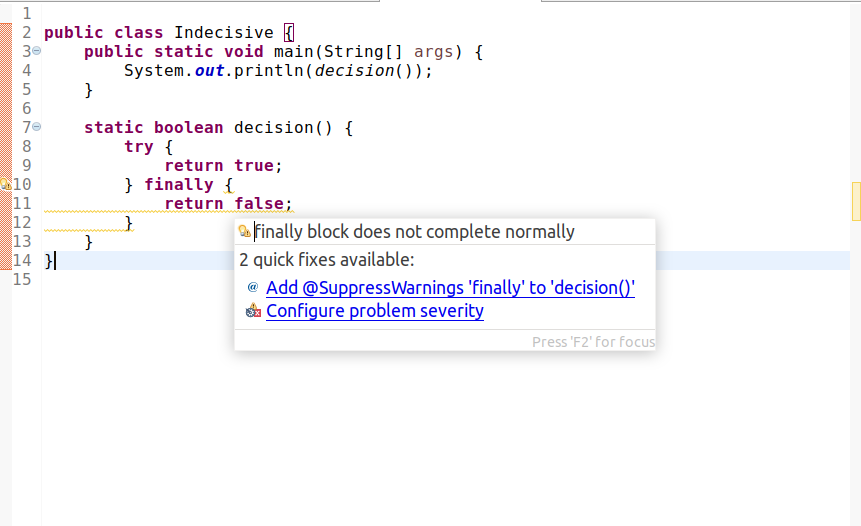

异常被捕获后，程序是否会继续执行 try-catch 块后的语句？
__答案：__会。
代码示例：
public class BolcksOutsideTryCatch {
public static void foo() {
try {
throw new Exception("Sample checked exception");
}catch (Exception e) {
System.out.println("Exception caught: " + e);
e.printStackTrace();
}finally {
System.out.println();
System.out.println("Exiting try-catch block...");
}
System.out.println();
System.out.println("Blocks outside the try-catch block will be executed!");
}
public static void main(String[] args) {
foo();
System.out.println();
System.out.println("the caller will also go well!");
}
}
|
运行结果：
Exception caught: java.lang.Exception: Sample checked exception
java.lang.Exception: Sample checked exception
at BolcksOutsideTryCatch.foo(BolcksOutsideTryCatch.java:5)
at BolcksOutsideTryCatch.main(BolcksOutsideTryCatch.java:17)
Exiting try-catch block...
Blocks outside the try-catch block will be executed!
the caller will also go well!
|
__结论：__如果在 try 执行时发生文件读取错误，可以在 catch 中修复这些错误，后续 try-catch 块外部的代码仍然会被执行。
try 与 finally 语句中同时出现返回语句，执行哪一句？
答案： finally 是 try-catch 块结束时必须执行的清理语句，在这种情况下，会执行 finally 中的返回语句。
代码示例：
public class Indecisive {
public static void main(String[] args) {
System.out.println(decision());
}
static boolean decision() {
try {
return true;
} finally {
return false;
}
}
}
|
这里 java 编译器会提示： finally block does not complete normally

运行结果：
__结论：__理论上 finally 不应该加入返回语句，因为它只是 try-catch 最后执行的一些清理工作1。
参考资料
- ‘finally block does not complete normally’ Eclipse warning